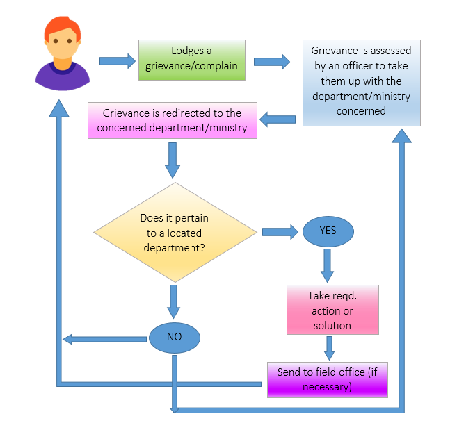

About
Grievances Redressal Portal is an online web-enabled system developed by DDPO Office, under the guidance of Directorate of Public Grievances (DPG) and Department of Administrative Reforms and Public Grievances (DARPG). GRP is the platform based on web technology which primarily aims to enable submission of grievances by the aggrieved citizens of Patiala District, anytime (24x7) basis to the department, who scrutinize and take action for speedy and favorable redress of these grievances. Tracking grievances is also facilitated on this portal through the system generated unique registration number.
How it works?
